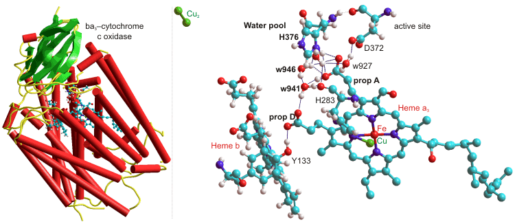

Human lysozyme, 1GF8.
The water molecules are not correctly directed
Water is a significant contributor to a protein's 3-D structure, and the protein controls the structuring of its surrounding water.
 Protein folding and denaturation
Protein folding and denaturation
 The contribution of water to protein
structure
The contribution of water to protein
structure
 Water in protein recognition and binding
Water in protein recognition and binding
 Water in protein and enzyme function
Water in protein and enzyme function
 Enzymic reactions in biphasic liquid systems
Enzymic reactions in biphasic liquid systems
'Interactions with water govern the folding, structure, stability and activity of proteins'
Protein hydration is essential for their three-dimensional structure, the dynamic ensemble of conformations [2249, 2921], and activity [472, 1093, 1345, 2005]. A perspective of the use of X-ray and neutron scattering and diffraction, NMR, terahertz spectroscopy, and molecular simulations has been presented [3830]. A structural determination with a resolution of about 1.5–1.6 Å is necessary to observe the continuous hydration layer at the protein surface [3049], which extends to thousand(s) of water molecules. Fluctuations of the protein surface groups drive and are driven and controlled by the surrounding network of water molecules [2648, 2917, 4202]. Indeed, proteins lack biological activity without sufficient hydrating water (usually at least a mono-layer covering; > 1.5 mols H2O mol−1 amino acid residue). High-resolution X-ray diffraction detects about one H2O mol−1 amino acid that isrelatively static [2677]. The aqueous structuring around proteins is affected out to at least 1 - 1.5 nm from its surface or 2 - 3 nm between neighboring proteins, as shown by terahertz spectroscopy [1368, 2102] and molecular dynamics [2886], e with even small proteins (e.g., bovine serum albumin, 66,463 Da) affecting the whole of its unstirred (Nernst) layer of about 20,000 neighboring water molecules [2102]. The free energy of hydrogen-bond breakage around proteins has been found to be about 1.7 kJ ˣ mol−1 higher than that of bulk water [4206].
Indeed, the range of these interactions is governed by directed hydrogen-bonding interactions that extend further than the electrostatics-dependent Debye screening length (< 1 nm). Additionally, the presence of glycans attached to (glyco)proteins imposes a long-range order on the water structure out to several nanometers, dependent on the orientation of the glycan [2104].
Some water molecules interact with the surface, reorienting both themselves and the surface groups, whereas other water molecules link these to the bulk in an ordered manner while remaining in dynamically active [1695]. The closer the water molecules are to the surface, the more likely that movement will be due to hopping between hydrogen bonding sites rather than conventional diffusion. The interfacial dielectric constant of these interfacial water molecules is about 2–4 reflecting the constraints imposed by the protein on the hydration waters and their low ability to polarize in response to an external field [3493]. The surface of a protein has more hydrogen-bond acceptor groups (e.g., -O-, =O, =N-) than hydrogen-bond donor groups ( e.g., O-H, =N-H, -NH2, -NH3+). This, together with excluded-volume effects, necessarily causes several vacant hydrogen-bonding sites around the local water molecules. In solution, proteins possess conformational flexibility, encompassing a wide range of hydration states, not seen in the crystal a or in non-aqueous environments. The equilibrium between these states will depend on the activity of the water within its micro-environment.that is, the freedom that the water has to hydrate the protein [434].
Protein conformations demanding greater hydration are favored by more (re-)active water (for example, high-density water containing many weak, bent, or broken hydrogen bonds) and 'drier' conformations are relatively favored by lower activity water (for example, low-density water containing many strong intra-molecular aqueous hydrogen bonds). Surface water molecules are held to each other most strongly by the positively charged basic amino acids. The exchange of surface water (and hence the perseverance of the local clustering and the overall system flexibility) is controlled by the exposure of the groups to the bulk solvent (that is, greater exposure correlates to greater flexibility and more unrestrained protein chain movement) [975]. The structuring and dynamics of the inner hydration layers are affected by the protein surface chemical composition (hydrophobic, hydrogen-bonding, polar, acidic, and basic groups), the complex topography (clefts, grooves, pockets, and protrusions), the presence of water 'wires' and the requirements of the secondary hydration layers' hydrogen-bonding [2781]. Counter-intuitively, hydrating water is slower near hydrophobic patches than near hydrophilic residues. This is due to stronger confinement often found in these areas. Protein conformational fluctuations affect the hydration shell dynamics in a heterogeneous manner across the protein surface. They particularly modify and reduce the aqueous dynamics within concave regions of partial confinement [2725]. Although usually destabilizing, the presence of a surface bulky hydrophobic residue may sometimes increase the thermal stability of a protein [3694]. The structures of six bovine pancreatic trypsin inhibitors (BPTI)-[5,55]Gly14 variants (Gly14Gly38, Gly14Ala38, Gly14Val38, Gly14Leu38, Gly14Ile38, and Gly14Lys38) all retained essentially the same structure as the wild-type BPTI. However, they showed an increase in thermal stability coinciding with their increase in surface hydrophobicity. The number of water molecules near residue 38 increased upon its mutation to a hydrophobic residue, suggesting that improved hydration contributed to the enthalpy-driven stabilization. [3694]
Hydration also affects the reactions and interactions of co-enzymes and cofactors; thus, the various redox potentials (and hence whether they oxidize or reduce) of some iron-sulfur proteins are accounted for by differential hydration rather than direct protein binding effects [1344]. Hydration of ionic solutes shields them from the protein surface, such that ionic strength changes have little effect on protein charge distribution [2278].
The folding of proteins depends on the same factors as control the junction zone formation in some polysaccharides; that is, the incompatibility between the low-density water (LDW) and the hydrophobic surface that drives such groups to form the hydrophobic core. b This drive for hydrophobic groups to mostly cluster away from the protein surface (in water-soluble proteins) is controlled by the charged and polar group interactions with each other and their cooperative hydration [2716]. It is challenging to model this driving force quantitatively [2491, 2492]. Dehydration of Concanavalin A induces the decrease of its β-sheet secondary structure due to the breakage of their β-sheet-linking hydrogen -bonds [2889].
Interestingly, some buffer-insoluble proteins are quite soluble in pure water and the absence of screening dissolved ions due to the weak (here, unshielded) interactions between the protein's intrinsic charges [1375]. Ions have effects on both protein solubility and protein stability (see the Hofmeister Series). Non-ionic kosmotropes, which stabilize low-density water, consequentially stabilize the structure of proteins. In addition, water acts as a lubricant [822], so easing the necessary peptide amide-carbonyl hydrogen-bonding changes. The biological activity of proteins appears to depend on forming a 2-D hydrogen-bonded network spanning most of the protein surface and connecting all the surface hydrogen-bonded water clusters [978]. Such a water network can transmit information around the protein and control its dynamics, such as its domain motions [977]. In particular, the translational diffusion of the interfacial water molecules stimulates the large-amplitude protein motions required for biological activity [2435]. Hydrating water molecules can control the functional motions of multi-domain proteins. For example, each subunit in hexameric glutamate dehydrogenase (GDH) comprises a nucleotide-binding domain (N-domain) and a core domain (C-domain) for hexamer formation [2583]. This molecular dynamics (MD) simulation shows that cooperative changes in the hydration structure within the cleft between the domains switches domain-closure on or off, with the hydrophobic closure necessary for substrate binding. These findings are reinforced by experimental observations that accompany μs-ms motions in dihydrofolate reductase [3166]. In this protein, changes in hydration appear to be necessary for collective domain motions, with water molecules gating structural transitions by wetting and drying protein cavities, leading to changes in the local hydrogen-bonding networks. This study also indicated that many of the indoles in proteins are hydrated even though the individual lifetimes of waters may be very short. These water molecules play a critical role in transmitting information between functionally essential regions of the protein and provide evidence that internal protein motions can be coupled through the mediation of hydrogen-bonded water bound in the protein structure. A functional switch between a wet and a dry configuration also occurs in Rhodobacter sphaeroides cytochrome c oxidase [3186]. This transition occurs in the proton’s exit channel. The protonation state of its acidic Glu286 residue is controlled by switching between the dry and wet states. In the wet state, this pKa is lowered to facilitate this protons transfer to the cytochrome a3-CuΒ binuclear center.
Intramolecular peptide (amide) hydrogen bonding makes a significant
contribution to protein structure and stability. Equilibrium H/D fractionation may be used to assess hydrogen bond strengths quantitatively and has shown them to be marginally stronger on average in α-helices rather than β-sheets by ≈ 0.8 kJ ˣ mol−1 [2115]. However, such hydrogen bonds are only
effective in the absence of accessible competing water. Even
just the presence of close-by water molecules causes peptide hydrogen bonds to lengthen [524],
so loosening the structure. Water molecules can bridge between
the carbonyl oxygen atoms and amide protons of different peptide
links to catalyze the formation, and its reversal, of peptide
hydrogen-bonding as well as forming long-lived linkages stabilizing
protein-ligand and protein-protein interfaces (for example, [688]). The
internal molecular motions in proteins, necessary for biological
activity, are very dependent on the degree of plasticizing,
which is determined by the level of hydration [810 (greater water gives lower glass transition temperature and greater plasticity [2245]).
Thus internal water enables the folding of proteins and is
only expelled from the hydrophobic central core when finally
squeezed out by cooperative protein chain interactions [352].
A method for computing buried waters and multi-water bridges in molecular dynamics trajectories has been described [3701]. Many water molecules (similar in amount to individual amino
acids) remain buried in the core of the proteins,
forming structurally-important hydrogen-bonded linkages. The
position of the ES CS equilibrium around enzymes has been shown to be essential
for their activity with the enzyme balanced between flexibility
(CS environment) and rigidity
(ES environment). Incoherent neutron scattering has been used to assess the protein's structural rigidity [3920].
CS equilibrium around enzymes has been shown to be essential
for their activity with the enzyme balanced between flexibility
(CS environment) and rigidity
(ES environment). Incoherent neutron scattering has been used to assess the protein's structural rigidity [3920].
The addition of non-ionic chaotropes only, or kosmotropes only, may inhibit the activity of enzymes (by shifting the equilibrium to the right or left, respectively), whereas an intermediate mixture of kosmotropes and chaotropes restores optimum activity [276]. Also, the ease of enzyme-substrate contact may be controlled by the level of water structuring in the protein environs [882]. Water in the crystal structure can be positioned by diffraction at high resolution (0.15 - 0.16 nm), with less being seen at lower resolutions [2554]. The crystal structures of proteins suggest that the commonest water polygons surrounding proteins are (H2O)3 trimers (typical of CS environments) and (H2O)5 pentamers (typical of ES environments) with lower amounts of tetramers, hexamers, and heptamers [1849].
Much of life functions optimally at about 37 °C, where a spanning hydration network is about to break down on heating, perhaps to help compensate for the biosystem's entropic changes [1541].
Water-mediated hydrogen bonding between peptide links has been found to be particularly important in the structure of collagen where only a third of the peptide links directly hydrogen bond to other peptide links [1314], and the stability of the triple helix is sequence-dependent [1438]. The single-water bridges found within the individual triple-helix collagen molecules have been found to be dynamically linked with freely exchangeable hydrogen atoms rather than being ice-like [2840]. The collagen matrix regulates the delivery of calcium phosphate species for bone mineralization and provides the spatial volume for intrafibrillar mineral deposition. Water in the nanoconfined spaces within the fibrils is quite different from bulk water and has a much lower density (≈ 0.70 g ˣ cm−3 ). It influences the infiltration of calcium phosphate species into the collagen fibril and subsequent dehydration to form a solid amorphous phase [3148].
The first hydration shell around proteins (≈ 0.3 g/g) is ordered; with high proton transfer rates and well-resolved time-averaged hydration sites; surface water showing coherent (orderly) hydrogen-bond patterns with large net dipole fields [702]. Such hydrating sites may be mapped by calculation [4033] to assist structure-based drug design. The hydrogen bonds holding these water molecules to the protein are stronger with longer lifetimes than bulk water [1355], and this water is unavailable to colligative effects. By retaining some liquidity, this hydration shell protects the protein against irreversible denaturing effects, such as very low temperatures [2338]. As hydration sites may be positioned close together and therefore mutually exclusive, it has been argued that the solvation is better described as a water distribution density function rather than by specific water-occupied sites. For example, no more than 164 of the 294 high-density hydration sites around myoglobin are occupied at any moment, and there is no correlation between the maximum site density, occupancy, and residence time [542]. The first hydration shell is also 10-20% denser than the bulk water and probably responsible for keeping the molecules sufficiently separated so they remain in solution [315] (that is, solutions are kinetically stable but often thermodynamically unstable). c Although a significant amount of this density increase has been shown to be due to simple statistical factors dependent upon the way that the surface is defined in depressions [401], much is due to a protein's structure, and the higher density mainly in pockets within, or at the surface of the protein molecule [3952]. The excess of polar hydration sites (tending to increase surface density)d easily counteracts the remaining nonpolar surface groups (tending to produce low-density surface water). Protein surfaces are not just hydrophilic but also possess hydrophobic regions that interact poorly with water and help provide the driving force for the proteins to interact with other proteins, ligands, and molecules [3556]. The surface water is required for the protein to show its biological function as, without it, the necessary fast conformational fluctuations cannot occur. The interfacial water network exhibits significant cooperativity with the protein's global hydration shell that behaves collectively [2908]. Thus proteins have no activity (and enter a glassy state, at about 220 K) when the surrounding water becomes predominantly low-density [1197]. Also, dry proteins remain rigid (glassy) until sufficient water is added to hydrate the protein's charged groups, occurring at a water weight fraction of 0.05 for lysozyme at 25 °C [2240].
Using X-ray analysis, the hydration shell shows a wide range of non-random hydrogen-bonding environments and energies. Proteins are formed from a mixture of polar and nonpolar groups. Water is most well-ordered around the polar groups where residence times are longer, but where they will interfere with water's natural hydrogen-bonding, than around nonpolar groups where aqueous clathrate structuring may form [2578]. The water molecules surrounding the side chains of glycine, alanine, α-aminoisobutyric acid, α-aminobutyric acid, valine, and related hydrocarbons have been shown to resemble the gas clathrate hydrates, with the cage directly hydrogen-bonded to the protein backbone's polar groups [4021]. The dynamics of the mutual interaction of water and protein as shown by dielectric relaxation have also been reviewed [3617].
The ordering created in the water surrounding proteins extends the proteins' electrostatic surfaces well away from their physical (that is, amino acid) surfaces giving them far greater electrostatic visibility to visiting ligands [1156]. This non-specific electrostatic effect of the water effect is additional to any specifically directed hydrogen-bonding that may extend away into the bulk from the surface hydrogen-bonding to the amino acid side-chains helps to determine the three-dimensional folding of the proteins. This particularly involves the acidic (aspartic acid, D; glutamic acid, E), basic (lysine, K; arginine, R), and hydrophilic amino acids (asparagine, N; glutamine, Q; serine, S; threonine T) but also involves the aromatic amino acids that can form π···H-O hydrogen bonds (histidine, H; phenylalanine, F; tyrosine, Y; tryptophan, W) [3069].
Molar volumes of the amino acids
The line is the best straight line from the amino acid data but is expected
to lie on the low-density side of aqueous structuring.
The graph opposite shows the molar volumes of the amino acids [1063] (using the one-letter code). Leucine (L) has the largest molar volume relative to that expected from its relative molecular mass (molecular weight) and forms low-density clathrate water structures if exposed to the solution. It is followed by isoleucine (I), valine (V), phenylalanine (F), lysine (K), and arginine (R). Aspartic acid (D) has the smallest molar volume relative to that expected from its molecular mass and forms higher density water structuring. It is followed by asparagine (N), glutamic acid (E), serine (S), cysteine (C), glutamine (Q), histidine (H), threonine (T), and glycine (G). The hydration properties of alanine (A), proline (P), methionine (M), tyrosine (Y), and tryptophan (W) are slightly kosmotropic. The relative hydrophobicities have been assessed [2820] as
D < E < K < R < Q < H < N < S < Y < W
< T< M < F < C < G < A < I < V < L < P
The water is slow to exchange, showing the dynamic behavior of bulk water 25 °C colder [147]. Low-density water (such as ES) is promoted [148, 276] surrounding this dense hydration and polyelectrolyte double layer (as described in the 'Polysaccharide hydration' section). Nonpolar groups promote clathrate structures [153] (such as ES) surrounded by denser water. It is no surprise, therefore that the degree of hydrophobic hydration is correlated with the hydration of the polar groups further away. As clathrate-type structures break down at higher temperatures, hydrophobic hydration shows greater temperature dependence than hydrophilic hydration [2761]. Clathrate shells contain loosely held water with greater rotational freedom than in the bulk [139]. However, under favorable conditions, clathrate hydrophobic hydration may exert pressure on nonpolar C-H bonds, pushing them in, so contracting their bond length, and increasing their vibrational frequency. This blue-shifting (that is, the vibration frequency increases and intensity reduces) 'push-ball' hydration [149] should not necessarily be thought of as 'typical' hydrogen-bonding even if the CH···OH2 distances are suitably close (see [1293]). However, they can be considered as part of a continuum of hydrogen-bonding behavior, where sometimes the OH2 behaves as a much more weakly interacting base than usual and the C-H behaves with reversed dipolar behavior compared with the more usual O-H hydrogen-bonding partners [625].
There are significant differences in the directional rates of water diffusion perpendicular and parallel to the protein surface that are maximal at about 6 Å but still determinable at 15 Å from the surface [542]. Evolutionary processes have used the organization in this water surrounding proteins to create preferred diffusive routes and orientation for metabolites and favored conformational changes and interactions. Such diffusive paths lead to binding sites with their helpful hydration. It has been suggested that pressure waves formed from flickering water clusters (for example, as described elsewhere) may link protein molecular vibrations, so carrying information through the intracellular milieu [549], 2678] and powering product movement between enzymes in biochemical pathways [665].
Barnase-barnstar protein, from PDB 1BRS

Water molecules form an integral part of most protein-protein [1339], protein-DNA [1340] and protein-ligand [1341, 3447] interactions, aiding the mutual recognition and both the binding thermodynamics and binding kinetics [1338]. Molecular assembly is driven and steered by maximizing fulfilled hydrogen bonding and reducing the number of unmet hydrogen bonding opportunities (so-called 'frustration') at the protein-water interface [2843]. Strong water‐water enthalpic attractions are balanced against the water molecule's high mobility in entropic terms. The complete arrest of a water molecule's mobility sets a limit on the entropic contribution of a water displacement process, while the solvent environment sets limits on ligand reactivity [3813].
Generally, hydrophilic residues make up the protein−protein and protein−DNA binding surfaces. These interact via water molecules. The relative diameters of the binding cavity and the binding ligand determine the kinetics and thermodynamics of (hydrophobic) binding cavity-ligand systems. This binding involves a sharp (cooperative) dewetting transition in their formation and a continuous dewetting transition on the loss of the ligand [2575]. The binding energy has been attributed to changes in the free energy of the networks of hydrogen bonds that are formed, broken, and re-arranged when two hydrophobic surfaces approach (but do not necessarily contact) one another[2670], and this may be viewed as the hydrophobic effect. Removal of water from the binding site (before ligand binding) may be assisted by nonpolar ligand groups due to a reduction in the interference of the previously bound water with the protein's internal hydrogen bonding and increased bulk hydrogen-bonding [2922].
The water at the interface of the tightly bound barnase-barnstar enzyme-inhibitor complex (see right) shows highly slowed dynamics (> 100-fold, [2797], from 20 bridging and 74 interfacial water molecules compared with 459 non-interfacial water molecules, reminiscent of glassy water even at ambient temperatures. Similar effects were noted at protein−DNA interfaces. The strength of these effects is thought due to the presence of a strong electrostatic field, driven by the binding surface’s electrostatic complementarity [2797].
Many kinase inhibitors (used as cancer drugs) have recognition mechanisms involving water molecules structured by the surrounding protein [2277]. Water's small size, polarity, and conformational flexibility, together with the strength and directionality of the interactions, ensure good fits while retaining flexibility and ease of reversibility. The driving force for binding depends not only on the interaction of the biological molecules with each other but the energetic cost for the necessary removal of hydration water and the energetic gain for the subsequent molecular rearrangement of the hydration water molecules [1793, 1805, 2363]. It may well be that the main driving force for the protein-protein interactions is not newly formed electrostatic attractive interactions between the proteins but the entropic gain by the displaced water, as shown for actin-myosin binding [2614]. The use of water may also be useful in broadening the specificity of such links; for example, the peptide-binding protein OppA uses several flexibly-adaptive water molecules to hydrogen bond and shield charges when binding to lysine-X-lysine tripeptides, where X is any one of the twenty common amino acids [1445]. In some cases, structured and structuring water molecules have also been found to be very important for inhibitor recognition [2128].
Water may have a significant role in ligand binding even when it may not be seen in the crystals to be directly involved. For example, the binding of sialic acid to the Haemophilus influenzae virulence protein depends on the placement of a water molecule influenced by a local alanine residue. The ligand is not bound when this water molecule is displaced by an asparagine mutant. It was suggested that the solvent structure operates as an evolutionary constraint on the protein sequence that contributes to ligand affinity and selectivity [3771]. Water molecules stabilize Escherichia coli L-arginine/agmatine transporter AdiC and act as placeholders for atoms of the AdiC substrates L-arginine and agmatine [4313].
[Back to Top  ]
]
Molecular recognition through hydrogen-bonding
The energetic optimization of mutual hydrogen-bonded networks between protein, water, and ligand is an intrinsic part of the molecular recognition process in enzymes, binding proteins and biological macromolecules generally [412]. Note that water-bound and oriented in empty ligand binding sites will reduce the activation entropy when replaced by the ligand [414]. Similarly, water next to protein surfaces involved in complex formation also shows reduced motion (lower entropy). In contrast,areas that do not contribute to protein-protein complex formation show increased motion, thus suggesting that evolution of protein surfaces maximizes the entropy gain arising from the exclusion of hydration water when forming dry protein-protein interfaces [2428]. An estimate of the entropy lowering of biological water relative to bulk water is 1.7 KJ ˣ mol−1 [4234].
Proteins may create aqueous biphasic systems at their interfaces, which can be used to partition materials into, or out of particular water pools. Many membrane proteins, such as the translocons required for the cotranslational assembly of membrane proteins, contain large water-filled cavities (water pools). For example, the heterotrimeric SecY translocon complex partitions membrane protein molecules by creating a water pool that conducts nascent hydrophobic peptide chains through the translocon during secretion or membrane insertion. These pools contain water that behaves very differently from bulk water, having retarded rotational dynamics and aligned dipoles [2446].
Water molecules are arranged/arrange themselves, forming a gradient in water dynamics around 'active' sites such that they facilitate the reactions via the active site's 'hydration funnel' [2237, 2475]. This arrangement often leads to the localized water molecules being activated for reaction either directly or catalytically. Also, it may lead to small empty spaces (the so-called dehydrons) and the fundamental reactivity of surface water [2164].
Figure 1. The water network links secondary structures within the protein, determining the fine detail of the protein's structure and how particular molecular vibrations may be preferred. The above chain of ten water molecules, linking the end of one α-helix (helix 9, 211-227) to the middle of another (helix 11, 272-285) is found from the X-ray diffraction data of glucoamylase-471, a natural proteolytic fragment of Aspergillus awamori glucoamylase [155].
Conserved water-binding site in ribonucleases
Figure 2. The above centrally-placed water molecule makes strong hydrogen bonds to residues in three separated parts of the ribonuclease molecule, holding them together. This water molecule and its binding site are conserved across the entire family of microbial ribonucleases [345].
Water molecules have also proved integral
to the structure
and biological function of a dimeric hemoglobin [377, 4078], where the dynamic
and entropic changes upon ligand binding are coupled to the protein–water contact dynamics. Hydration waters are trapped deep inside the core region of an A2A G-protein coupled adenosine receptor enabling an allosteric network of water-mediated inter-residue contacts between the ligand-binding pocket to the G-protein binding site. This allosteric network plays a crucial role in the receptor regulation [4078].
The internal water molecules in proteins have been surveyed [725]. They stabilize proteins by filling internal cavities and interacting with backbone residues of loops and other polar atoms buried in the protein core. They may also act as lubricants to favor loop dynamics [2296]. Many enzyme processes utilize several domains or subunits that fluctuate between several states during the catalysis. These fluctuations involve only low-energy structural changes due to water's directing and lubricating action [2855].
The energy barrier in proton-transfer and electron-transfer enzymic reactions may be lowered by creating a large polarizability at the active site due to electrostatic fluctuations of the hydration water [2964]. Both proton-transfer processes [907, 160b] and electron-transfer reactions [908] may be further facilitated by ordered (hydrogen-bonded) water molecules connecting proton donor to acceptor sites or electron donor to electron acceptor sites, respectively [4252]. In both cases, the transfer is faster where the linking water molecules possess stronger hydrogen bonding. Low-barrier hydrogen bonds form part of proton wires when the pKa values of neighboring hydrogen-bond donor and acceptor amino acids are nearly equal. These may facilitate both directions of an electron transfer pathway, as in the water oxidation in photosystem II (PSII, protein data bank code: 3ARC) [4093]. With the proton on its histidine (D1-His190) (also hydrogen-bonded to the carbonyl of an asparagine, D1-Asn298), the redox potential of its neighboring tyrosine (D1-Tyr161) is the lowest and can serve as an electron donor directly to the oxidized chlorophyll. However, with the proton on the tyrosine (D1-Tyr161), the redox potential of both the tyrosine (D1-Tyr161) and histidine (D1-His190) are equal and can serve as an electron donor to PSII's manganese center (Mn4CaO5) via a water wire. Another water wire allows the transfer of the proton from the catalytic site to the protein bulk surface [4105].
The capability to transport of water molecules or protons down the water chains (wires) depends on the surrounding amino acids. If the water wire is surrounded by hydrophobic side-chains or hydrogen-bond donors such as the amino groups of asparagine and glutamine, it can only transport water. If the water wire is surrounded by H-bond acceptors such as aspartic acid, glutamic acid, and backbone carbonyl groups, it is capable of proton transport [3999]. In the photosynthetic protein photosystem II (PSII), a water-splitting reaction is driven by light,
2 H2O  4 H+ + O2 + 4 e−
4 H+ + O2 + 4 e−
where PSII incorporates two water molecules and releases four protons. Here, the water chain is surrounded by hydrogen-bond acceptors, and the water molecules are rigidly fixed, so the water chain transports the protons rather than the water molecules. In aquaporin, the water chain is surrounded by hydrophobic side-chains and hydrogen-bond donors, and where the water molecules are flexible and fluctuating, so the water wire transports water molecules at up to three water molecules per nanosecond but does not transport protons.
In the cyanobacterial photosystem II, a water channel has been found linking bulk water to the active Mn4 CaO5 cluster and critical hydrogen-bond water networks within the protein's interior, where the supplied water molecules are oxidized [2979]. In redox metalloenzymes, including those in respiration, energy conversion, and photosynthesis, electron transfer is often accompanied by proton movement (proton-coupled electron transfer, PCET) [3910]. Such processes almost invariably involve water molecules.
Peroxide bond cleavage in ascorbate peroxidase leading to the formation of compound I, derived from [3910]
Ascorbate → Monodehydroascorbate radical + e-
The ascorbate peroxidase then converts ascorbate to the mono-dehydroascorbate radical with one-electron oxidations.
Compound I + Ascorbate → Compound II + monodehydroascorbate radical •
Compound II + Ascorbate → Ascorbate peroxidase + monodehydroascorbate radical • + H2O
Putative water wire
Local water structures and proton-conducting hydrogen-bonded water wires (see right) can form rapidly (≈ 10 ns or so) in response to control by relatively small-scale rearrangements of the protein matrix [2101]. In some cases, the water wire may be affected by the binding of different ions. An example is the Cl− /H+ transporter protein that catalyzes the 2:1 stoichiometrically coupled exchange of Cl− and H+ across biological membranes. The water wire is positioned with the aid of the chloride ion, but other ions such as F−, NO3−, and SCN− bind differently and change the stoichiometry or destroy the active wire [2576]. The movements of protons through proton-transport membrane channels are coupled to the diffusion of water through the pores, but these protons cross faster than the diffusion of H3O+. As examples, both the voltage-gated proton channel 1 protein (Hv1) [2849], implicated in diseases including cancer, and the influenza M2 channel [3085], essential for the reproduction of the flu virus, are trans-membrane four-helix bundles that transport protons down water wires.
Water-assisted asparagine recognition and
aspartate discrimination by asparaginyl-tRNA synthetase
Figure 3. Cartoon showing water-assisted asparagine recognition and aspartate discrimination by asparaginyl-tRNA synthetase. (a) Amongst the bound water molecules in the unliganded enzyme, one (Wat1) is bound between the Leu229 peptide carbonyl and the Glu230 carboxylate and another (Wat4) between the side chains of Tyr333 and Arg364. (b) These water molecules link to the amide group on the asparagine-AMP substrate on binding, and two water molecules are released (Wat2 and Wat3). Aspartate-AMP cannot bind at the same site as the Wat1 water molecule is not able to donate three hydrogen bonds. Figure partially redrawn from [2336].
The heme-copper ba3-oxidoreductase from Thermus thermophilus uses a highly conserved water molecule (w941), held between two propionate groups as part of a one proton input channel, to deliver protons to the active site for both O2 chemistry and proton pumping (see below, [2322]); w = water, H = histidine, D = aspartate, prop = propionate, Y = tyrosine).
ba3-Cytochrome c oxidase, from Thermus thermophilus, 1EHK
Several water molecules are hydrogen-bonded to the propionate-A–H+ from the heme-a3, and w941 and w946 (as shown above) act as a Zundel cation when protonated. The neighboring histidine (H376, near the 'free' water pool) controls the protonation state of the propionic acid (A) aspartic acid (D372) pair, and hence through another histidine (H283) to the heme-a3 oxidation state [2322].
The catalytic zinc ion of a membrane type I matrix metalloproteinase
with a small peptide product (R'), from [3058]
Water molecules can also be used by enzymes to facilitate the movement of substrates and products towards and away from their active sites. Shown right is the catalytic zinc ion of a membrane type I matrix metalloproteinase with a small peptide product (R') formed immediately after peptide cleavage [3058]. There are two crucial auxiliary water molecules at this active site. One water molecule (WB, situated in front) acts to stabilize the protonated reaction intermediate by binding to the β-oxygen of the product carboxylate, while the second water molecule (WA, situated behind) facilitates the product release by hydrogen-bonding to between the α-oxygen of the product carboxylate and the glutamate carboxylate.
High-resolution X-ray structures of proteins show the presence of water ions inside and on the surface of proteins from their close oxygen-oxygen distances, typical of the Zundel ions [3822].
[Back to Top  ]
]
It would often be useful if enzyme-catalyzed reactions could be performed in solvents other than water, as this is not the ideal medium for most organic reactions [4186]. Many reactants (e.g., molecular oxygen, steroids, and lipids) are more soluble in organic solvents than in water, and some products may be relatively labile in an aqueous environment. Accomplishing reactions with such substrates (e.g., the aerobic oxidation of estrogens catalyzed by fungal laccase) in non-aqueous media allows a much increased volumetric activity to be achieved. Microbial contamination, by contrast, is much less of a problem in such solvents, and the consequent absence of microbial proteases may lead to an apparent stabilization in the biocatalyst.
Some polymerizing reactions, for example, the polymerization of phenols catalyzed by peroxidase, will produce a higher molecular weight product when carried out in a solution more able to dissolve the products (i.e., oligomers) initially formed. Under normal physiological conditions, hydrolytic enzymes catalyze the degradation of polymers; i.e., hydrolases are transferases normally transferring a moiety to the acceptor, water. Water is ordinarily present in vast molar excess over other potential acceptor molecules, so no reaction occurs other than hydrolysis. Also, the normal 'concentration' of water (~ 55.5 M) is much greater than its typical Km (~ 50 mM), and the rate of hydrolysis will not be affected as the reaction proceeds. By significantly reducing the water activity in these systems, they can be used to transfer to other acceptors. Examples of this can be found in the transesterification reactions of esterases and lipases and the (undesirable) formation of isomaltose from glucose catalyzed by glucoamylase. Strengthening the protein surface hydration via surface charge engineering has proven an effective and efficient rational strategy for tailoring enzyme stability in organic solvents [4185].
Restriction of the enzyme to the aqueous phase effectively immobilities the enzyme and allows its straightforward separation, using phase separators developed for the established chemical process industry from the product-containing organic phase. hHowever, the main asset of these systems is their ability to shift the thermodynamic equilibria of the reactions [4188]. Enzymes do not change the equilibrium constants (Keq) of reactions.Although changes in the physical conditions (i.e., temperature, pH, and pressure) affect the Keq of a reaction, this effect is usually relatively slight over the physical range allowed by the stability of the biocatalysts. However, the use of a biphasic aqueous-organic system may result in substantial changes in the practically useful 'apparent' Keq. The use of enzymes within organic solvents normally results in a two-phase system as all water-soluble enzymes possess a significant amount of strongly bound water, even when in an apparently dry state.
Right shows a schematic diagram showing two configurations for an enzyme within an organic solvent. (a) almost-anhydrous enzyme suspended in the organic solvent. The enzyme (E) is surrounded by a thin interphase consisting of water or water plus immobilization support. (b) enzyme dissolved in a reversed micellar medium. The micelles are formed by the surfactant molecules with assistance from any cosurfactant (if present). The surfactant (e.g., cetyltrimethylammonium bromide (CTAB), bis(2-ethylhexyl) sodium sulphosuccinate (AOT), phosphatidylcholine, tetraethyleneglycol-dodecylether) is only found at the interphase boundary. In contrast, the water-immiscible cosurfactant (e.g., butanol, hexanol, octanol), added to vary the properties of this interphase, is generally less polar and more soluble in the continuous organic phase. Both preparations (a) and (b) give optically transparent solutions.
It should become clear from the later discussion that there may be a substantial advantage to be gained from using biphasic systems in many enzyme-catalyzed reactions. One major factor must first be addressed; the stability of the enzyme in these systems. A distinction should be drawn between the more water-soluble hydrophilic enzymes and the more hydrophobic enzymes often associated with lipid and membranes (e.g., lipases). Hydrophilic enzymes' functional integrity and stability appear to depend on a thin layer of water, just a few molecules thick, within the microenvironment. This amount of water is minuscule (between 50 and 500 molecules of water for each enzyme molecule), and the enzyme may effectively be operating in an almost anhydrous state. Some hydrophobic lipases retain activity even if fewer water molecules remain, presumably just sufficient to stabilize the conformation of the active site. The pH of such minute pools of water, containing no free hydrogen ions, is impossible to measure or control directly. However, it appears that the enzyme 'remembers' the pH of its last aqueous solution and functions as though still at that pH. If the enzyme-bound water is stripped out or diluted by using more water-soluble, or miscible, organic solvents, then the enzyme is usually inactivated. However, under conditions where this does not occur, the limited amount of water available, and the associated reduction in the water activity, considerably reduce the rate of thermoinactivation. This has a stabilizing effect on most enzymes; porcine pancreatic lipase, for example, has a half-life of greater than 12 hours at 100 °C in 0.02% water in tributyrin, whereas this drops to 12 minutes at a 0.8% water content and inactivation is almost instantaneous in 100% water. Additionally, the freezing point of the water is reduced, which allows the use of particularly heat-labile enzymes at very low temperatures. The lowering of the water activity tends to produce a more rigid enzyme molecule which may affect both its Km and Vmax. In extreme cases, this may result in a change in the catalytic properties. Porcine pancreatic lipase demonstrates this effect. When used in biphasic systems of low water activity, it no longer catalyzes transesterification reactions involving the bulky tertiary alcohols. The solvent polarity is the most critical factor in balancing stabilization and inactivation due to the organic phase. Solvents of lower polarity (i.e., greater hydrophobicity) are less able to disrupt the structure of the necessary tightly bound water molecules. The best measure of polarity is the logarithm of the partition coefficient (LogP) of the organic liquid between n-octanol and water; the higher the LogP, the more nonpolar (hydrophobic) is the solvent.
Schematic diagram showing the dependence of the activity of the
immobilized enzymes, in biphasic systems, on the LogP of the
organic phase. ________ free enzyme;-------- enzyme immobilized
on a strongly hydrophilic support
There appears to be a clear correlation between the activity of biocatalysts in two-phase systems and the LogP. The S-shape of this relationship suggests that enzymes are generally inactivated by solvents with logP < 2 but are little affected by solvents with LogP > 4. There is some variation in the effects between different enzymes and different solvents, which makes activity prediction, in the LogP range of 2 - 4, somewhat imprecise. This range includes some of the most utilized organic phases (e.g., chloroform), which may be suitable for some applications but cause harmful inactivation in others. The solubility of the reactant(s) and product(s) may considerably reduce the range of LogP available for a particular application; many basically nonpolar molecules possessing some polar structural regions which cause their lack of solubility in strongly hydrophobic solvents. The choice of organic phase will also depend on additional factors such as cost, ease of recovery, fire and fume hazards, and specific inhibitory effects. The S-shaped curve can be shifted to the left by immobilizing the enzyme within a highly hydrophilic support. A simple way of achieving this is to impregnate a beaded hydrophilic polymer (e.g., Sephadex, agarose) with the enzyme followed by suspension of the wet beads directly in the organic phase. These shifts are very important as they greatly increase the choice of suitable organic phases. Such impregnated beads have the additional advantages that
Biphasic systems may be further stabilized by the use of deuterated water (D2O). This reduces the rate of thermal inactivation, although it does cause an increase in the pKas of ionizing groups by about 0.4 with the associated changes in the pH-activity and pH-stability relationships. The higher cost of the deuterated water is offset, to a certain extent, by the small amount necessary in these systems and the ease with which it may be recovered at the end of a catalytic process.
Even where the organic solvent has very low LogP and is miscible, the effect of the expected loss in enzymic activity may be offset by changes in the equilibrium constant. Thus, it has been proposed that glucose isomerase be used in aqueous ethanol to produce high fructose corn syrup. The equilibrium fraction of fructose can be raised by about 10% to 55% at 30°C in 80% v/v ethanol [4187]. This is economically valid even though the enzymic activity drops by about 10% compared to that in the absence of ethanol.
[Back to Top  ]
]
Tenebrio molitor antifreeze protein,
from PDB 1EZG, binding to ice
Although most protein molecules do not adsorb onto ice, both ice-nucleating and antifreeze proteins (AFP) [3815] bind to ice crystals. The reason for this difference concerns the interaction area; ice-nucleating proteins form large aggregates, while antifreeze proteins are typically small and soluble in water [3602]. Evolutionary analysis reveals that antifreeze proteins do not emerge from a common ancestor; rather, their evolution is independent and they are active by an irreversible adsorption-inhibition mechanism [3815]. The different classes of AFP have been described [3815]. Antifreeze proteins possess ice-binding sites [3583] that are typically flat and relatively hydrophobic [2819]. They introduce greater order (lower entropy) in their hydration shell for their enthalpic binding of the surface water molecules [3048]. This is most energetically favorable where there is no pre-existing order in the water that requires destruction, and the surface water has dangling O-H groups available for the crystalline hydrogen bonding. The distance between the protein and ice surfaces determines the water network density and whether the protein is attracted or repulsed [3739]. Surfaces that raise the water activity above that of the bulk water are ideal for this purpose. There is a synergy between hydrophobic and hydrophilic groups where the hydrophilic groups anchor the ice-binding sites, and the hydrophobic groups reduce its flexibility [3592]. Strongl hydrogen-bonding surfaces (with low water activity) force surface water molecules into particular structures that have difficulty in fitting to the ice crystals. A lower water density at the ice-binding site paves the way to the protein binding to ice nuclei, while higher solvent density at non-ice-binding surfaces protects against ice growth [3645].
Once the ice-binding surface has bound an ice crystal, it is the property of the rest of the protein to maintain a liquid-like character in its hydration water, preventing further ice-nucleation and growth on top of the bound antifreeze proteins [3957]. The ice-active repeats of the ice-nucleating protein (InaZ) from the ice-nucleating bacterium Pseudomonas syringae adopt a β-helical structure in solution (and at water surfaces) that imposes structural ordering on the adjacent water network so increasing as the interface is cooled to temperatures close to the melting point of water [4194].
Interestingly, the clathrate pentagonal structuring has been found to extensively surround the helices in the four-helix bundle of the antifreeze protein from winter flounder (an alanine-rich α-helical type; AFP-I). This pentagonal structuring retards the formation of the harmful ice crystals in fish living in near-freezing water [2084]. Type II AFPs are cysteine-rich globular AFPs found in smelt and Arctic herring. Rather than binding directly with ice, the antifreeze globular protein type three (AFP-III), from the Antarctic eelpout, arranges some of its surface water molecules into an ice-like array well above 0 °C but retained below 0 °C, which it then uses to bind to ice crystals [2801]. AFP-III also adsorbs at the air-water interface [3440]. The thermal hysteresis, ice recrystallization inhibition, and cryopreservation activity of three isoforms of the notched-fin eelpout AFP-III have been studied, as well as the structural and dynamic features of their mutants' ice-binding surfaces [4192]. In another protein, poly-pentagonal water networks are observed in a protein capable of binding to ice crystals. This protein has about fifty sem-clathrates pentagonal water networks with more than 400 surface waters forming a poly-pentagonal network with a perfect position match to the waters constructing the first prism and pyramidal ice planes [3947]. It is the precise positioning of the pentagonal clusters that is important for their antifreeze / ice-binding properties.
In the Tenebrio beetle (insect) antifreeze protein, there are tandem 12-residue repeats (TCTxSxxCxxAx) that form a β-helix with regularly spaced threonine residues (0.744 nm and 0.464 nm), each turn of the helix, that make a match to water molecules in the ice prism plane (0.738 nm and 0.452 nm (see right [2802]). It has been found that ice recognition occurs by slow diffusion of the protein to present the proper orientation to the ice surface, followed by a rapid collective organization of the hydration water at the ice-binding surface to form an anchored clathrate motif that latches the protein to the ice surface [3397].
A similar binding site has been found in the ice-binding protein of the Antarctic bacterium Marinomonas primoryensis (MpAFP) that is used to anchor the organism to Antarctic ice flows where oxygen and nutrients are more available [2805]). The protein binds to sea ice through a flat, repetitive two-dimensional array of Thr and Asn residues. Both polar and nonpolar groups create order in the water molecules surrounding them, but their ability to do this and the types of ordering produced are very different. Polar groups are most capable of creating ordered hydration through hydrogen bonding and ionic interactions (an excellent guide to amino acid hydrogen bonding is given elsewhere).
[Back to Top  ]
]
a To avoid such activity loss, proteins generally avoid crystal formation, perhaps by evolutionary design involving surface kosmotropic lysine residues that minimize self-aggregation [771]. [Back]
Hydrophobicity
b A historical review of the 'hydrophobic effect' in proteins is available [1393].
An approximate comparison of the hydrophobicity of the amino acids is given in the table opposite. Further discussion of relative hydrophobicities is given elsewhere, as is a classification of hydrophobicity scales [633]. It should be noted that such hydrophobic interactions are particularly important in stabilizing inter-domain and quaternary interactions. Also, the protein surface may be made up of 25% -45% hydrophobic residues.
The hydration shells of zwitterionic amino acids have been quantitatively determined by Raman spectroscopy with multivariate curve resolution (Raman-MCR) and differential scanning calorimetry (DSC) [4379]. [Back]
c The effect of strongly bound surface water molecules on preventing protein-protein interactions is described in [881]. [Back]
d Alternatively to this molecular group approach, some of this increased density may be attributed to electrostriction pressure (local pressure increase due to the localized electric field) [951]. [Back]
e Other techniques, such as NMR, are incapable of showing this. Terahertz and Infrared Spectroscopy show that the hydration water with retarded reorientational dynamics extends to only about four H2O layers (~0.85 nm) [2848]. [Back]
Home | Site Index | Protein folding and denaturation | Polysaccharide hydration | Nucleic acid hydration | Hofmeister effect | Kosmotropes and chaotropes | Intracellular water | LSBU | Top
This page was established in 2001 and last updated by Martin Chaplin on 15 November, 2021